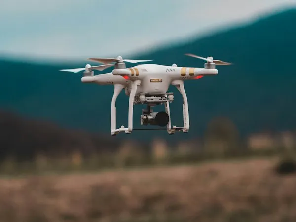
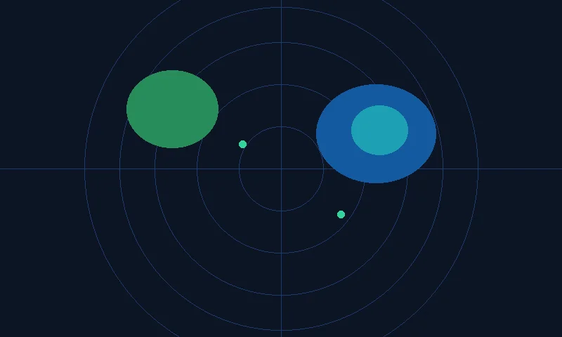

Altitude (AGL)
GPS Baro
118.4 m
FAA Max ceiling limit: 120.0 m
Ground Speed
Cruising
42.6 km/h
Wind resistance: 8.2 knots SE
Battery Level
78%
26 min rem.
Smart Return-to-Home at 20%
Obstacle Avoidance
360° Omnidirectional
All Clear
LiDAR + Dual Vision Sensors active
Live 4K HDR Gimbal Telemetry
REC ● 00:14:28 [4K 60fps]
Tactical Flight Controls
Waypoint 3 / 5 ActiveSurvey Path Progression
WP 01 - Takeoff & Calibration Check
15m
WP 02 - North Boundary Grid Scan
120m
WP 03 - Multispectral Crop Inspection
118m (Current)
WP 04 - East Canopy Thermal Mapping
110m
WP 05 - Precision Auto-Landing
0m
Ultra-Low Latency 4K FPV Stream
Direct OcuSync 4.0 live encrypted stream with 3-axis mechanical gimbal joystick control
Primary Optical Feed (STK-01)
H.265 Main 10-Bit
Gimbal & Optics Controller
Sensor Mode:
Pro Manual Photogrammetry
Aperture Setting:
f/2.8 - f/11 Adjustable
Mechanical Shutter:
1/2000s (Zero Rolling Shutter Blur)
Live SD Card Storage:
128 GB High-Speed V90 (84% Free)
Tactical Waypoint Corridor Planner
Autonomous geofence corridor routing with 3D elevation obstacle clearance
Airspace Route Map
Total Distance: 4.8 km
Flight Path Altitude & Speed Steps
| WP # | Coordinates | Target Alt | Speed | Action |
|---|---|---|---|---|
| 01 | 40.7447° N, 73.9485° W | 15 m | 10 km/h | Completed |
| 02 | 40.7490° N, 73.9420° W | 120 m | 45 km/h | Completed |
| 03 | 40.7530° N, 73.9380° W | 118 m | 42 km/h | In Progress |
| 04 | 40.7580° N, 73.9320° W | 110 m | 35 km/h | Queued |
| 05 | 40.7447° N, 73.9485° W | 0 m | 5 km/h | Auto-Land |
Real-Time Airspace Weather & Geomagnetic Radar
Live wind vectors, precipitation Doppler radar, cloud base, visibility, and solar storm ratings
Live Weather Radar & Precipitation Scan
Doppler Sync: Live
Meteorological Flight Index
Air Temperature:
21.5°C (Optimal Battery Efficiency)
Barometric Pressure (QNH):
1013.2 hPa (Standard)
Cloud Base Ceiling:
2,400 ft AGL (Unrestricted)
Geomagnetic Solar Activity (KP Index):
KP = 1.4 (Low • GPS Satellites Safe)
GPS Satellites Locked:
18 Satellites (GLONASS + Galileo + GPS)
Certified Remote Pilot Official Logbook
FAA Part 107 certifications, lifetime flight logs, digital endorsements, and flight safety records
Pilot Qualifications & Credentials
Certificate Number:
FAA Part 107 Remote Pilot #98214-B
Total Lifetime Flight Hours:
1,428.5 Flight Hours
Commercial Missions Logged:
342 Missions Completed
Safety Incident Record:
Zero (0) Incidents Logged
Recurrent Training Status:
Current • Valid thru 2027
Recent Commercial Flight Logs
| Date | Drone Unit | Duration | Mission Type | Signature |
|---|---|---|---|---|
| Today | STK-01 | 42 min | Powerline Inspection | Signed |
| Yesterday | STK-04 | 58 min | Agricultural Mapping | Signed |
| 28 Sep | STK-12 | 35 min | Thermal Building Audit | Signed |
| 26 Sep | STK-09 | 45 min | Commercial Film Production | Signed |